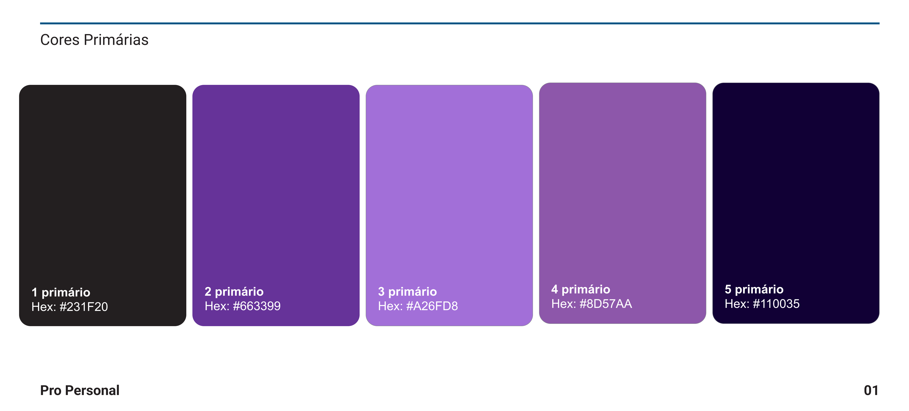
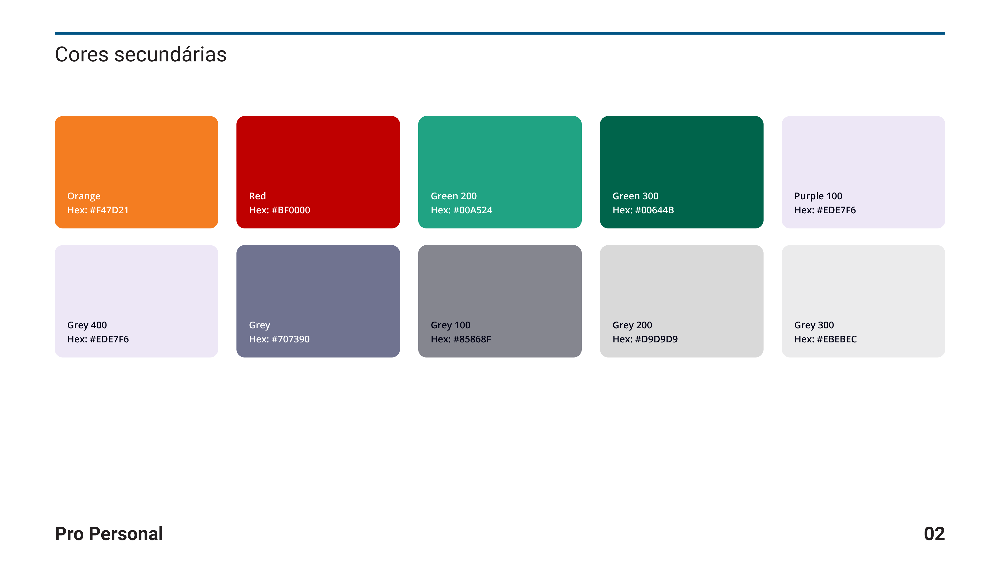
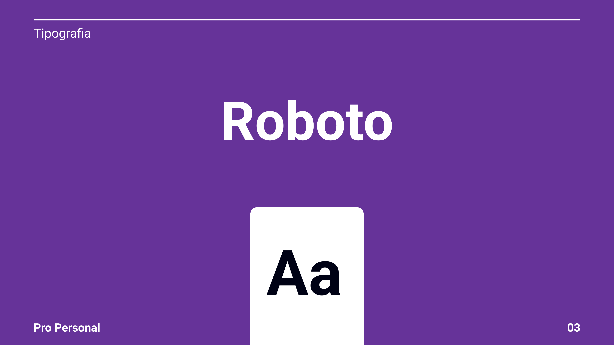
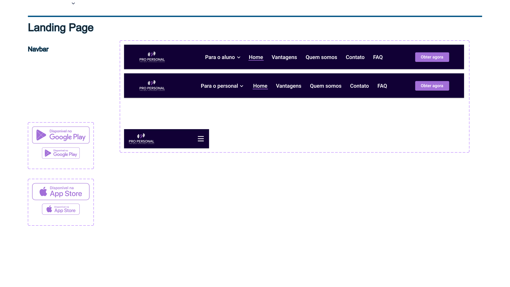
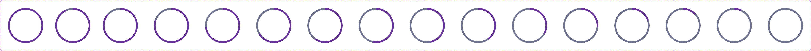
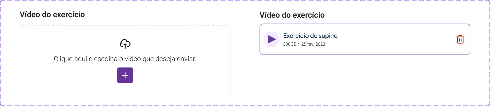
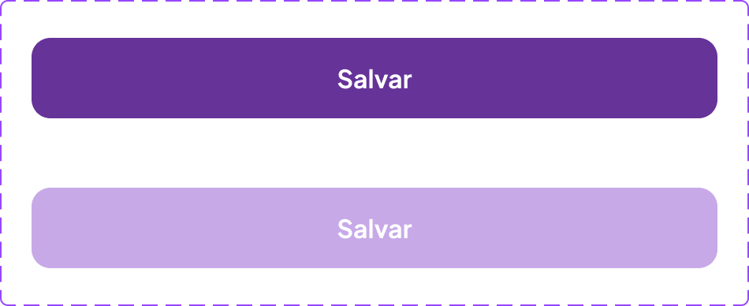

Zero Kits Prontos
Pro Personal · Design System Autoral (448 Componentes)
448 Componentes Autorais
60 Conjuntos de Variantes
12 Estilos de Cor Semânticos
12 Estilos de Cor Semânticos
Base do Style Guide



Componentes de Domínio em Português
388 Variantes / 60 Sets

Timer Circle

input_uploadvídeo

buttonSave
